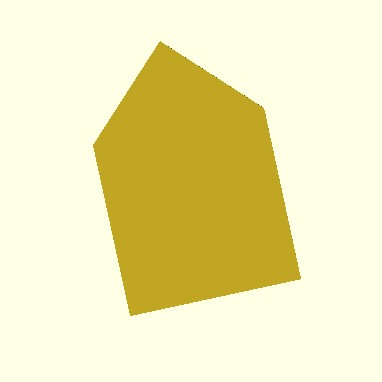

Функция polygon() создает многогранную фигуру из списка координат x,y. Полигон - самый мощный 2D-объект. Он может создавать все, что могут круг и квадраты, а также многое другое.
polygon(points = [[x1, y1], [x2, y2], ...])
примеры:
polygon(points = [[0, 0], [10, 10], [10, 0], [0, 10]])
polygon(points = [[0, 0], [7.7, 19.4], [-10, 30], [12, 30], [20, 50], [28, 30], [50, 30], [32.3, 19.4], [40, 0], [20, 12]])